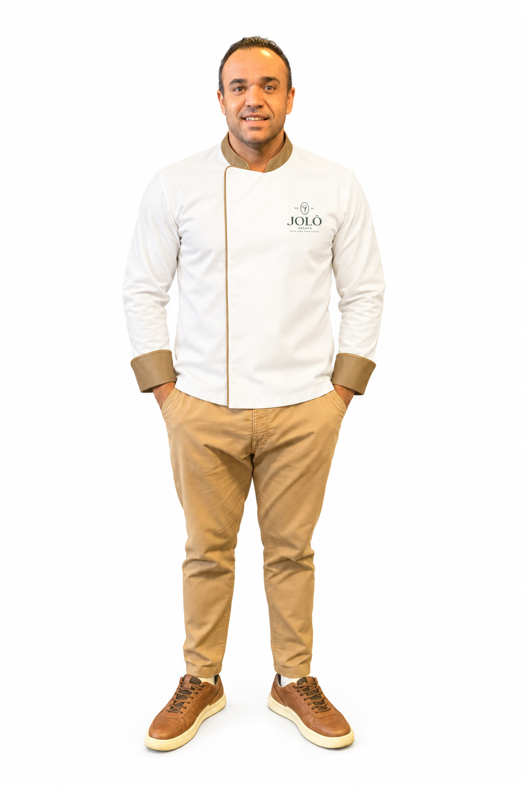
Seja um franqueado · Jolô Gelato
Mais que gelato.
Um negócio feito para valer a pena.
Uma marca artesanal que gera desejo no cliente, transforma momentos simples em experiência e leva ao franqueado um modelo de operação construído na prática.
Fale com o dono no WhatsApp ↗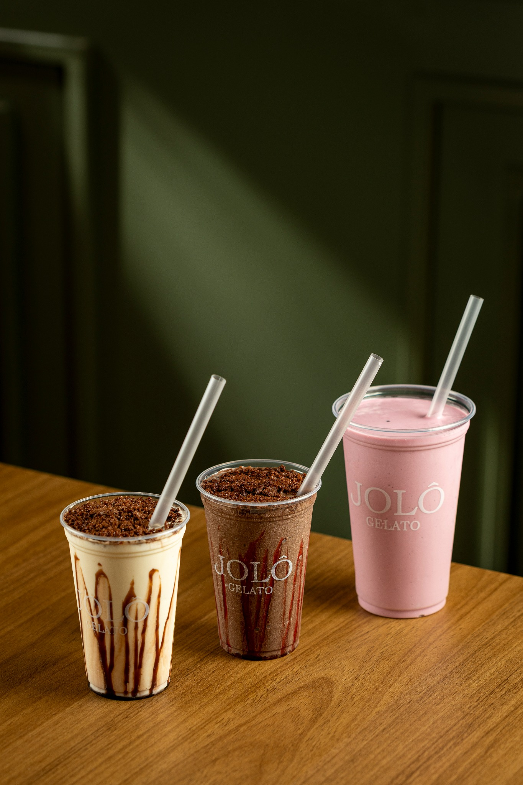
A oportunidade Jolô
Uma marca feita para o cliente desejar — e para o franqueado operar.
Produto, loja, atendimento, gestão e marketing precisam falar a mesma língua. A Jolô reúne esses pilares em uma proposta com identidade própria e experiência de consumo forte.
ProdutoGelato artesanal e cardápio autoral.
OperaçãoProcessos e padrões definidos.
MarcaVisual, ambiente e comunicação alinhados.
Diferenciais
Estrutura por trás de uma experiência que parece simples.
Gelato artesanalTécnica, textura e padrão de produto.
Preparo Lácteo AlimentícioPadronização de insumos, fichas e processos.
Suporte ao franqueadoImplantação, treinamento e acompanhamento.
Gestão integradaIndicadores, estoque, vendas e financeiro.
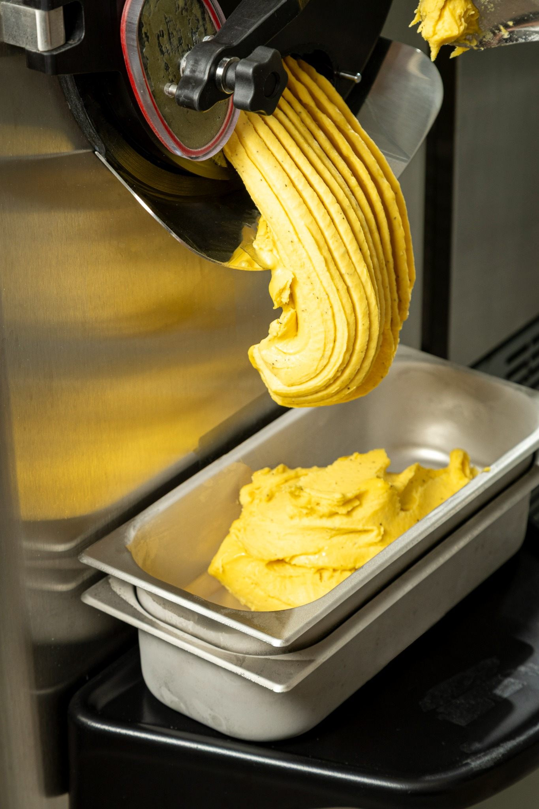
Uma rede em expansão
Números que contam a nossa história.
0
Estados
São Paulo + Rio de Janeiro
0
Unidades
rede Jolô
0
Anos de história
desde 2020
Nossa trajetória
Cada unidade marca um novo capítulo.
Do nascimento da primeira loja à chegada em novos mercados, a expansão foi acontecendo passo a passo.
Mar 2020
Três Fronteiras/SP
Inauguração da primeira Jolô Gelato.
Jun 2021
Santa Fé do Sul/SP
Expansão para a segunda unidade.
Jul 2023
Jolô Franchising
Lançamento oficial do modelo de franquias.
Out 2024
Jales/SP
Abertura da unidade.
Nov 2024
Fernandópolis/SP
Abertura da unidade.
Dez 2024
Sorocaba/SP
Abertura da unidade.
Abr 2026
Petrópolis/RJ
Abertura da unidade e chegada ao segundo estado.
2026 · em implantação
São Paulo/SP
Unidade da capital em andamento, com abertura prevista para novembro.
Nossa história
Nascida de produto. Construída com operação.
A Jolô nasceu em 2020, em Três Fronteiras/SP, unindo tradição familiar, técnica de gelato e vontade de criar algo único. A experiência de loja, a qualidade do produto e a evolução da operação abriram caminho para novas unidades e para o modelo de franquias.
O crescimento preserva a essência: fazer um produto que gere vontade, criar uma loja que seja lembrada e construir uma operação capaz de repetir essa experiência.
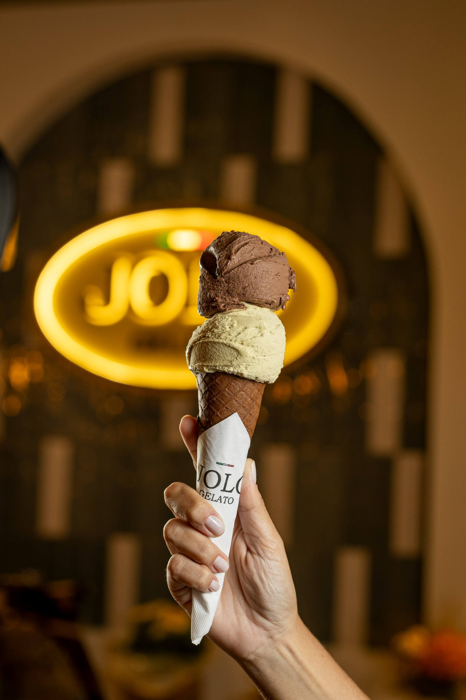
O que guia a Jolô
Missão, visão e valores.
Missão
Levar a experiência do sabor Jolô para todo o Brasil através do modelo de franquias, rentabilizando todos os stakeholders.
Visão
Ser reconhecida pela rede de franqueados como um negócio próspero que transforma vidas.
Paixão Pelo que faz e pelo crescimento contínuo.
Paciência Para crescer com qualidade e consistência.
Perseverança Para construir um negócio sólido e próspero.
Desejo de marca
Produtos que conquistam antes mesmo da primeira colherada.
Em vez de repetir imagens, a página mostra diferentes momentos do cardápio e da produção para reforçar variedade, cuidado e experiência.
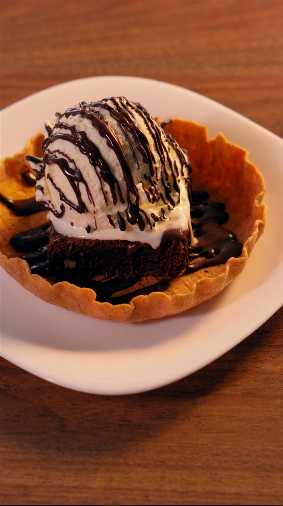
Brownie · experiência quente e gelada
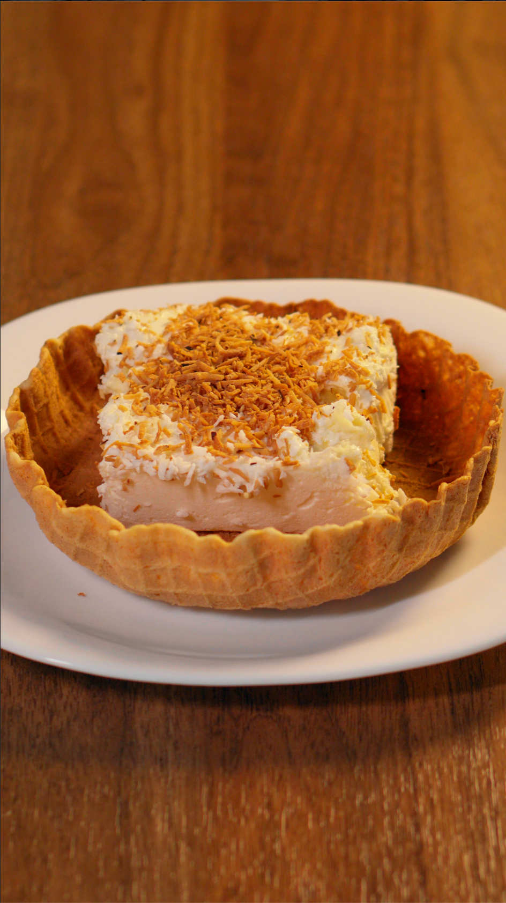
Fatiatto di Gelato
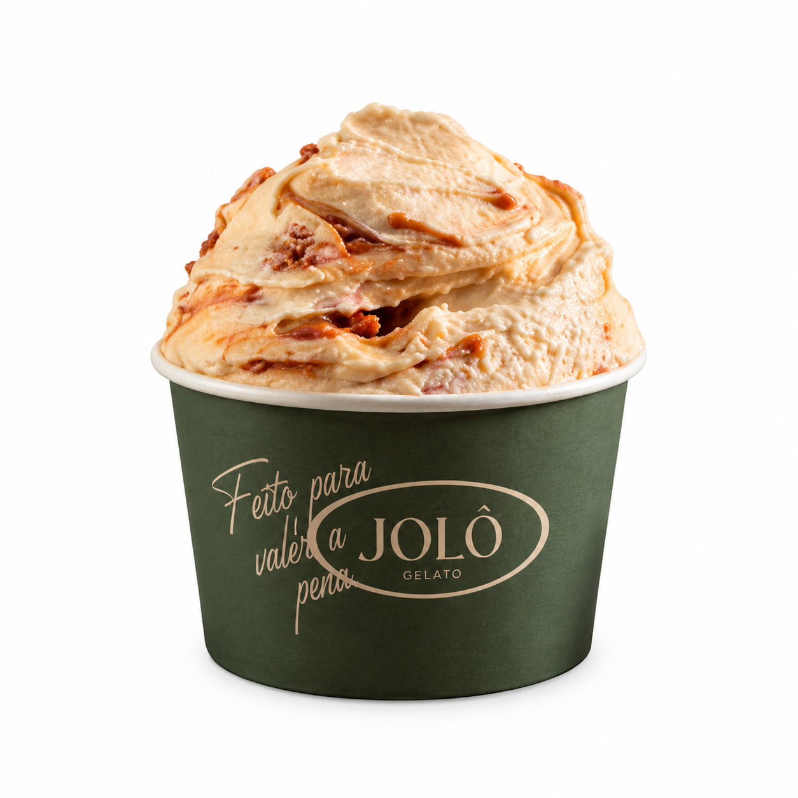
Gelato no copinho
Estrutura de franquia
O que o franqueado recebe para operar.
01
Produto exclusivo e de alta qualidade
Preparo lácteo alimentício para produzir o seu próprio gelato.
02
Operação simples e padronizada
Rotinas e processos organizados para a unidade.
03
Tecnologia de gestão
Sistema integrado para apoiar financeiro, estoque e vendas.
04
Marketing estruturado
Campanhas e materiais para construção de marca e vendas.
05
Implantação acompanhada
Do ponto à inauguração, com etapas e suporte.
06
Treinamento prático
Aprendizado aplicado à rotina da operação.
Como funciona
Da primeira conversa à inauguração.
1
Conhecer a apresentação
Entender a proposta e o modelo.
2
Ficha de qualificação
Preenchimento do perfil para análise.
3
Reunião estratégica
Conversa com o time de expansão.
4
Visita à operação
Conhecer uma unidade e a rotina real.
5
COF e contrato
Recebimento da COF e formalização.
6
Plano de inauguração
Implantação, treinamento e abertura.
Preparação para o sucesso
Treinamento em três semanas-chave.
1
Imersão na sede da franqueadora
Conhecer a estrutura, os processos e o modelo de negócio Jolô.
2
Treinamento na unidade franqueada
Aplicar o conhecimento na prática e preparar a equipe.
3
Acompanhamento pós-inauguração
Ajustes operacionais, suporte e consolidação da rotina.
Perfil do franqueado
Procuramos quem queira construir um negócio de verdade.
Atitude empreendedora, capacidade de gestão e identificação com os valores Jolô são mais importantes que apenas gostar de gelato.
Visão empreendedoraProatividade, dinamismo e visão de negócio.
Gostar de pessoasAtender, liderar e encantar clientes.
Responsabilidade e resiliênciaCapacidade de gerenciar desafios.
Alinhamento com a JolôPaixão, Paciência e Perseverança.
Investimento
R$ 350 mil de investimento total estimado.
A composição varia conforme ponto, projeto, formato da unidade, equipamentos, obra, frente de loja, estoque e capital de giro.
Taxa de franquiaR$ 30.000
Equipamentos*R$ 120.000
Frente de loja e utensíliosR$ 70.000
Estoque inicialR$ 15.000
Capital de giroR$ 35.000
Investimento total estimadoR$ 350.000
*A composição dos itens pode variar. O investimento total estimado considerado para o modelo é de R$ 350.000.
Quero entender o investimento ↗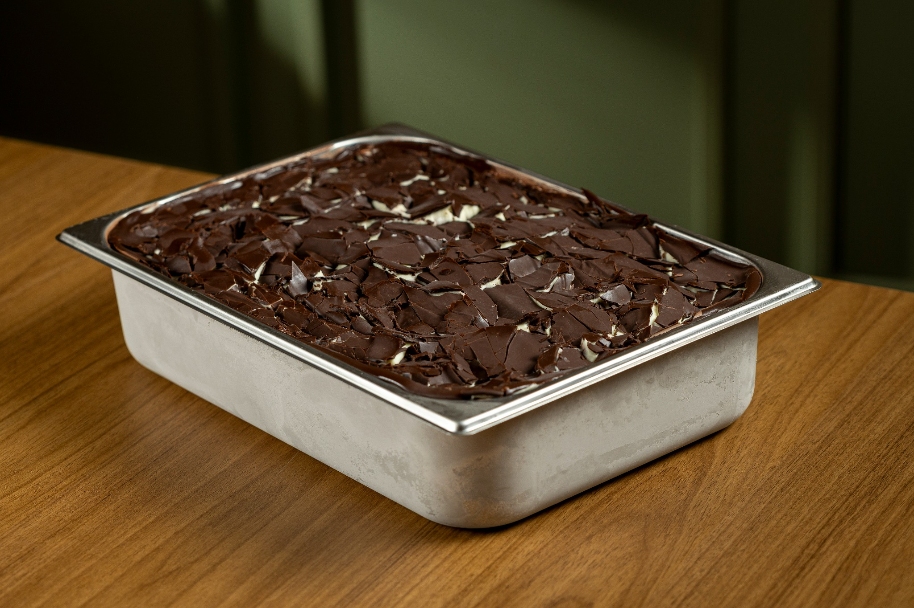
Quem está por trás da Jolô
Sócios presentes no negócio.
Produto, operação, gestão e expansão acompanhados de perto por quem constrói a Jolô todos os dias.
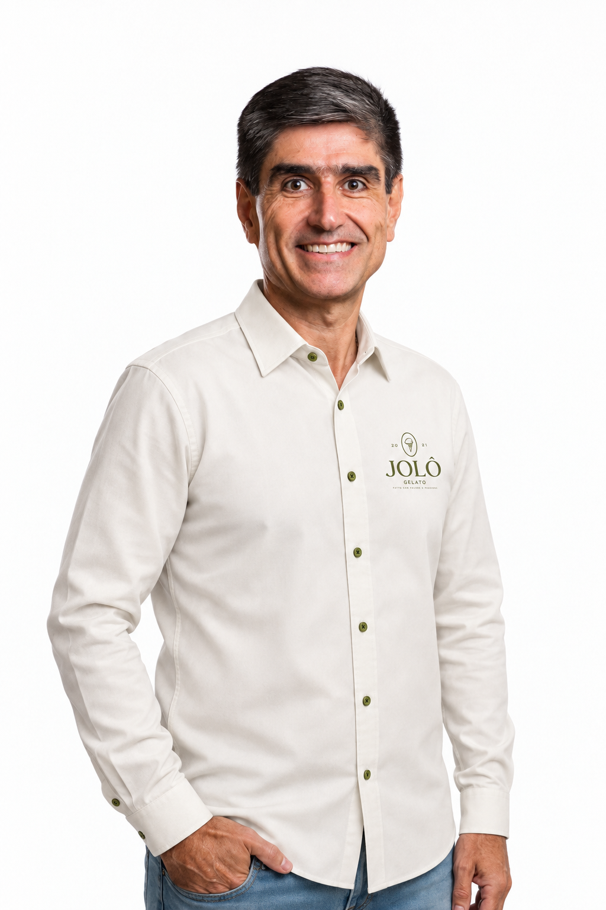
Ricardo Soares
Sócio · Gestão & Expansão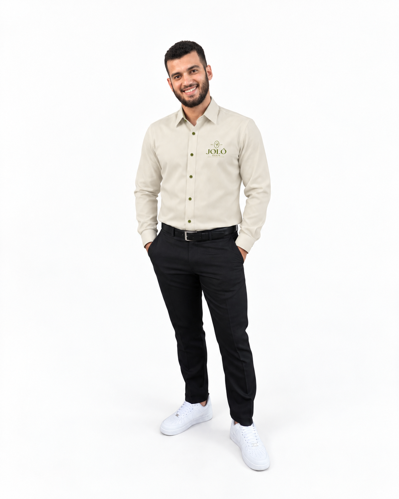
Raylan Souza
Diretor de Operação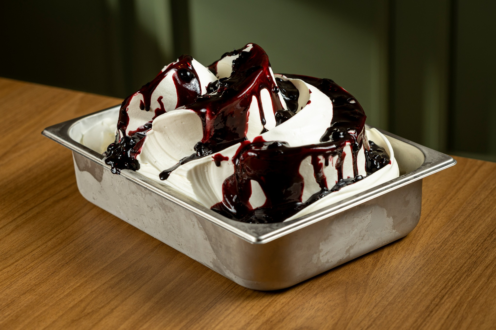
Perguntas frequentes
Antes de conversar, tire as principais dúvidas.
O investimento total estimado informado para o modelo é de R$ 350.000, podendo variar na composição conforme ponto, projeto e formato da unidade.
A trajetória inclui unidades em São Paulo e Rio de Janeiro, com São Paulo capital em implantação.
Para operar um negócio com marca, produto, processos, suporte e acompanhamento já estruturados.
Sim. A jornada de implantação prevê apoio na identificação do imóvel e adequação ao padrão da marca.
Clique em “Fale com o dono” para iniciar a conversa pelo WhatsApp e avançar para a etapa de qualificação.
Seu próximo negócio pode começar aqui
Talvez a próxima Jolô seja sua.
Fale diretamente com quem construiu a operação e entenda se o modelo faz sentido para você e para a sua cidade.
Fale com o dono no WhatsApp ↗